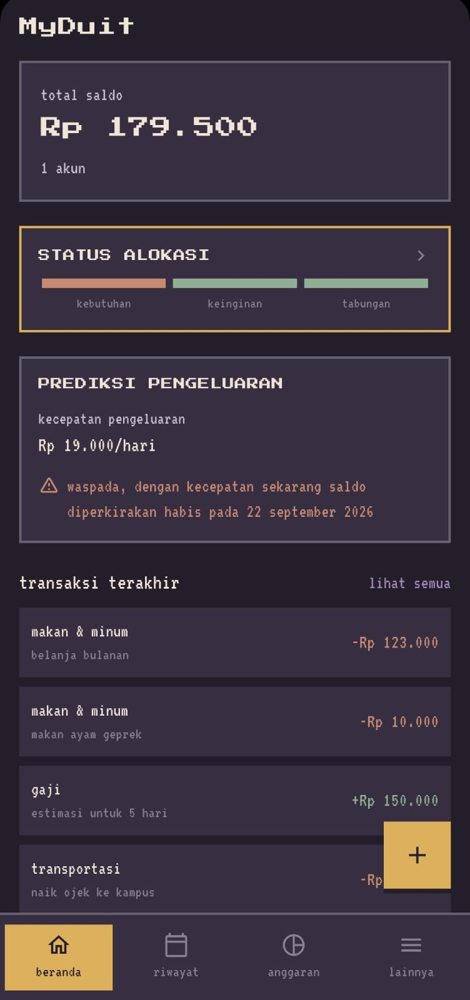
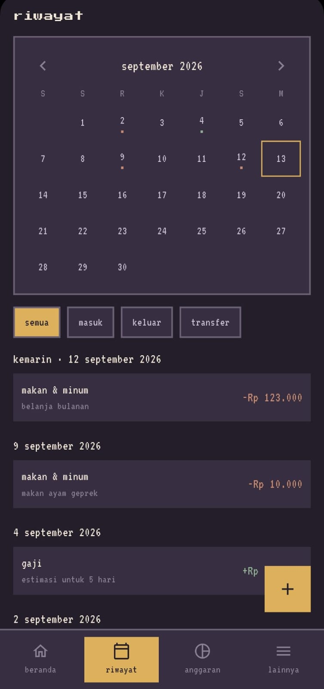
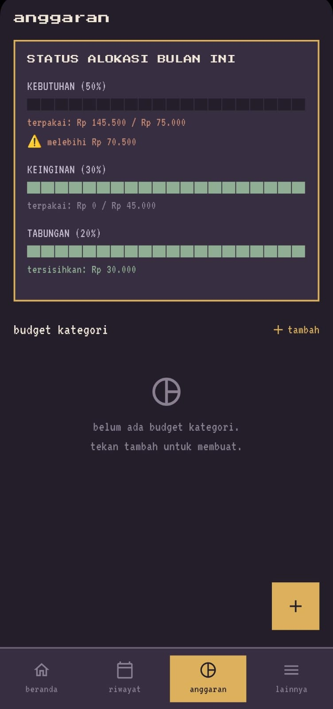

MyDuit
Aplikasi mobile untuk monitoring dan mengatur keuangan pribadi.
Kontribusi Saya
Merancang dan membangun seluruh aplikasi dari nol. mulai dari menentukan masalah yang akan diselesaikan, desain UI/UX, implementasi fitur tracking transaksi, hingga sistem prediksi pengeluaran harian yang membantu pengguna memonitor budget secara real-time.
Yang Saya Pelajari
saya mempelajari cara membuat aplikasi mobile yang simpel namun tetap menyelesaikan problem denegan tuntas, karena memang itu tujuan kita sebagai developer untuk menggunakan resource sesedikit mungkin namun memberi dampak sebanyak mungkin. saya juga banyak belajar desain UI/UX, mulai dari pemilihan layout hingga ke pemilihan warna dan logo